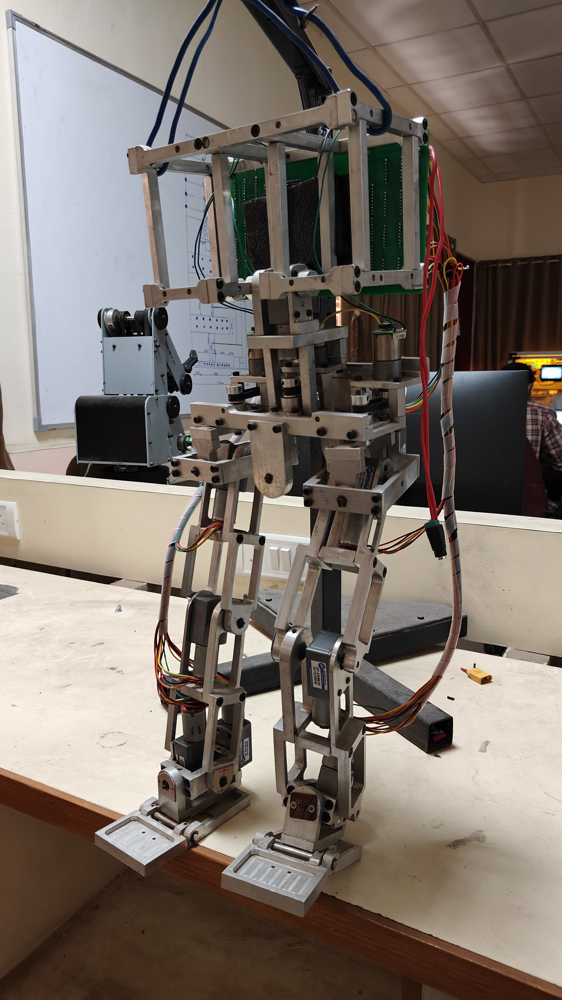
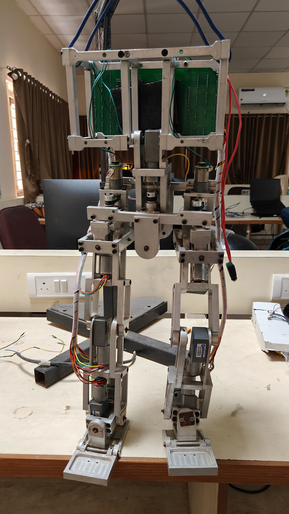
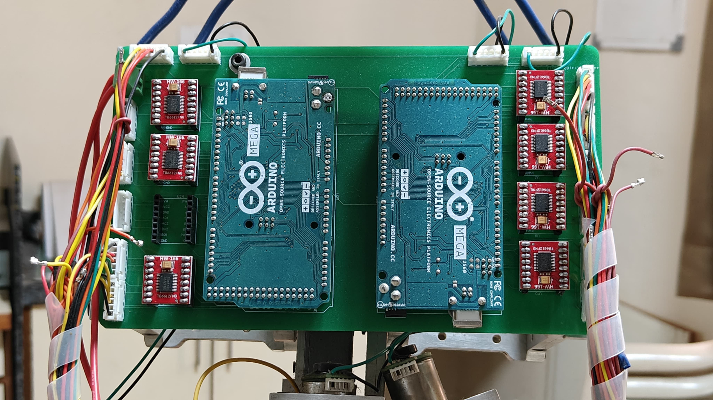
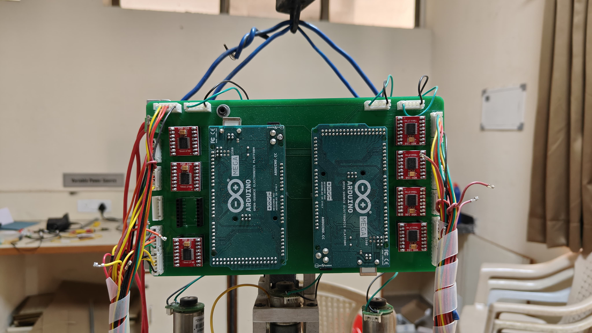

← All work
14 DoF Bi-Pedal Robot.
A 14-degree-of-freedom biped built to reproduce human walking patterns, with custom PCBs, encoder-equipped DC motors, and I²C multi-controller communication.

Position
Research Assistant
Robotics Lab, BVM
Robotics Lab, BVM
Year
2022
Degrees of Freedom
14
simulating human gait
simulating human gait
Stack
Custom PCBs · I²C
DC + encoders · CAD · Electronics
DC + encoders · CAD · Electronics
The brief.
This was a long robotics project building a biped robot with 14 degrees of freedom, designed to reproduce human walking patterns. A big part of it was designing custom printed circuit boards (PCBs) for DC motors fitted with encoders.
Those motors are what give the biped precise movement. To get the control units talking to each other cleanly, I used the I²C communication protocol. The project pushed my mechanical design and PCB fabrication, and taught me a lot about how multiple controllers coordinate in a robot.
Key contributions.
- Designed and assembled custom PCBs for the encoder-equipped DC motors at each joint.
- Used I²C for low-latency communication between the distributed microcontrollers.
- CAD modelling of the chassis and joint linkages for the 14 DoF configuration.
- Brought motor control, encoder feedback, and inter-controller messaging together in one framework.
// architecture: distributed I²C controllers · encoder feedback · 14 DoF
Gallery
Build artifacts.



